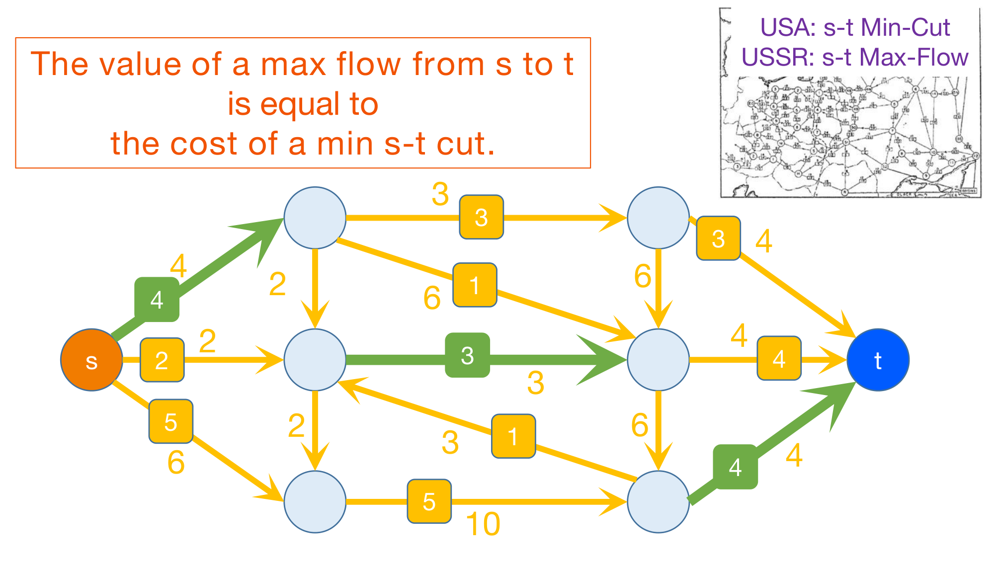
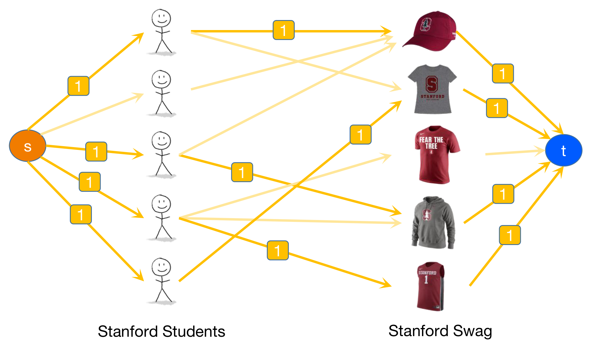
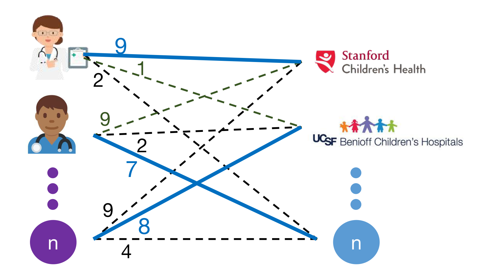
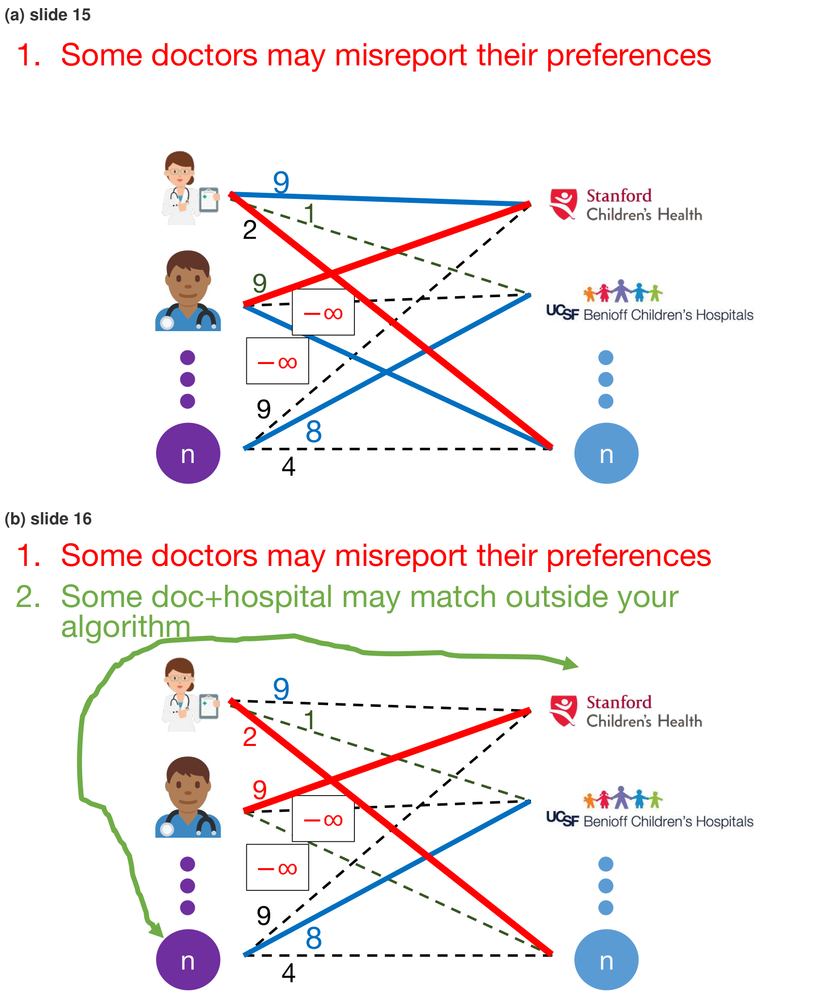
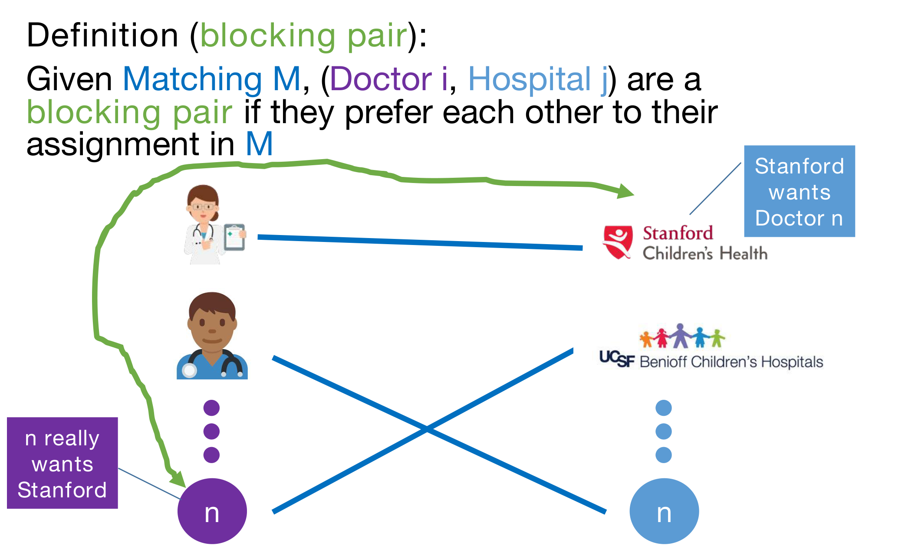
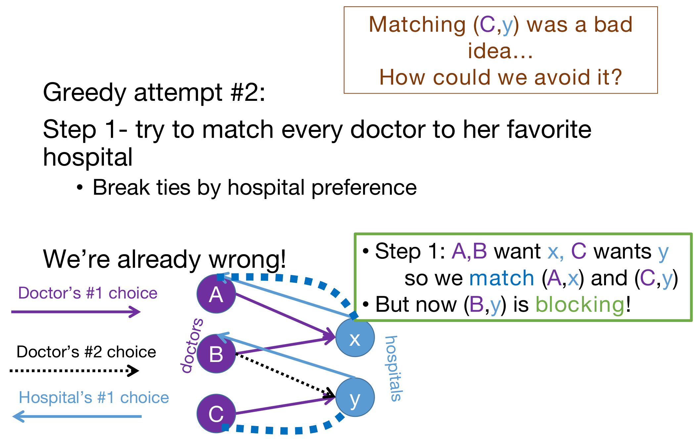
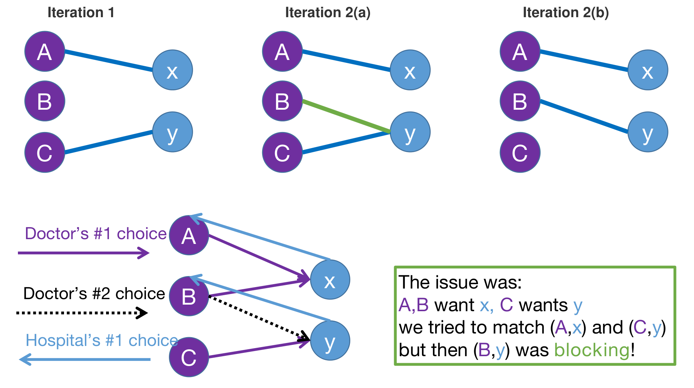
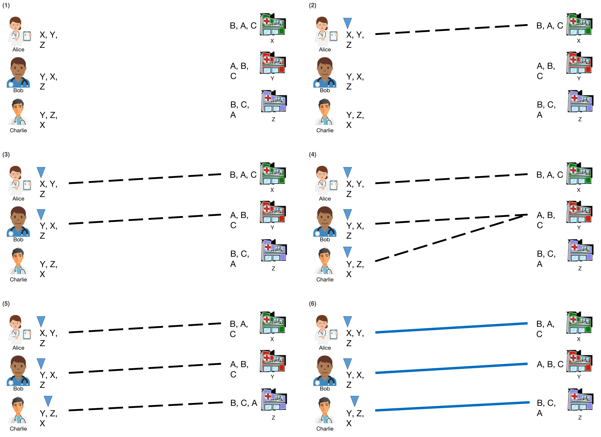
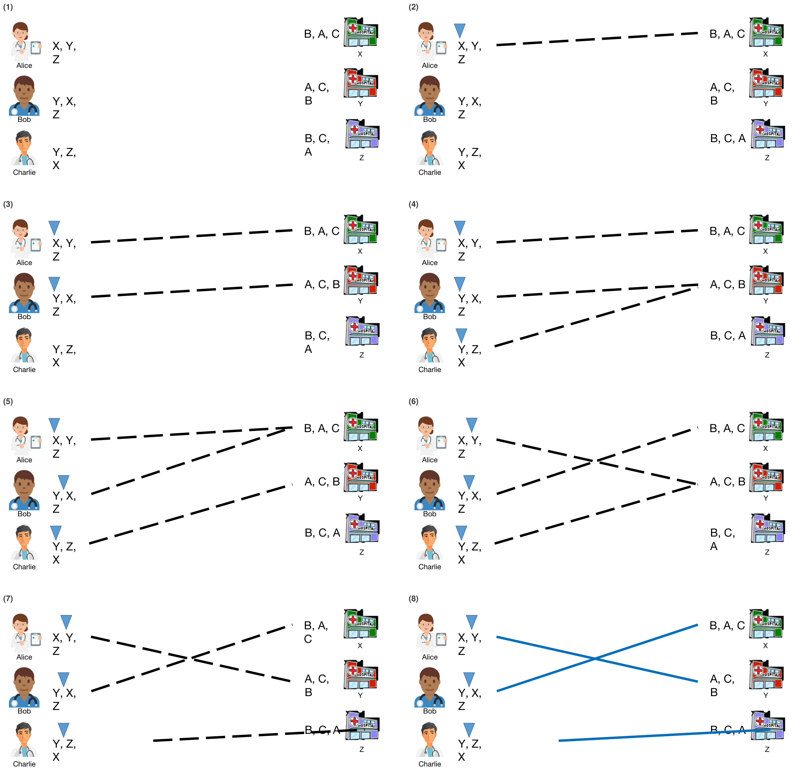

본 포스트는 서울대학교 Chenglin Fan 교수님의 4190.407 Algorithms (Design and Analysis of Algorithms) 강의 자료(17강 Gale-Shapley (Deferred Acceptance) Algorithm, 총 70장)를 바탕으로, 강의를 처음 듣는 독자도 논리적 흐름을 따라갈 수 있도록 재구성한 것입니다. 1강 표지에 “Part of Slides Borrowed From Mary Wootters”라고 밝혀 두었듯 이 시리즈의 슬라이드는 상당 부분 Stanford의 Mary Wootters 교수님 자료에서 가져온 것이며, 이번 강의의 예시(Stanford 학생과 기념품, Stanford Children’s Health와 UCSF 병원)도 Stanford의 맥락을 그대로 씁니다. 본문의 3–6장은 7번째 슬라이드의 Today가 세워 둔 흐름 — Hospitals/residents problem → Stable matchings → Deferred Acceptance Algorithm → Discussion, applications and non-applications — 을 따르고, 그 앞의 Recap 슬라이드 네 장과 개요를 1–2장에, 마지막 Next time 슬라이드를 7장에 두었습니다.
한 줄 요약 (TL;DR)
“양쪽이 모두 선호를 가진 매칭에서 지켜야 할 기준은 가중치의 합이 아니라 안정성이고, 지연 수락 알고리즘은 언제나 안정 매칭을 \(O(n^2)\)에 찾아 줍니다.”
지난 강의의 최대 흐름은 한쪽(학생)의 선호만 다뤘지만, 이번 강의는 의사와 병원이 서로를 순위 매기는 병원·레지던트 문제를 다룹니다. 선호를 간선 가중치로 바꿔 최대 가중치 매칭을 구하면 선호를 거짓으로 보고할 유인과 알고리즘 밖에서 따로 짝을 맺을 유인이 남는데, 뒤의 유인을 없애는 기준이 차단 쌍(blocking pair)이 없는 안정 매칭입니다. 의사 \(n\)명과 병원 \(n\)곳이 서로를 빠짐없이 순위 매기면, 지연 수락(Gale–Shapley) 알고리즘은 짝이 없는 의사가 선호 순서대로 병원에 지원하고 병원은 더 선호하는 의사가 오면 잠정 매칭을 바꾸는 방식으로 완전한 안정 매칭을 \(O(n^2)\) — 입력 크기에 선형인 시간 — 에 찾습니다. 그러므로 안정 매칭은 언제나 존재합니다. 그 결과는 모든 의사에게 안정 매칭 가운데 최선(의사 최적)이고 모든 병원에게 최악(병원 최악)이며, 의사는 선호를 거짓으로 보고해도 이득을 볼 수 없지만 병원은 이득을 볼 수 있습니다.
1. 지난 시간 (Recap)
강의는 Recap 슬라이드 네 장으로 시작합니다. 앞의 두 장은 14–15강의 탐욕 알고리즘을, 뒤의 두 장은 16강의 최대 흐름과 최소 컷을 되짚습니다. 오늘의 알고리즘은 두 주제가 만나는 자리에 있습니다. 탐욕적으로 고르되, 더 나아질 수 있으면 앞의 선택을 되돌립니다.
1.1 탐욕 알고리즘의 한 가지 방식 (One Way to Greedy Algorithms)
슬라이드 2는 14강(Greedy algorithms!)과 15강(Minimum Spanning Trees)에서 쓴 탐욕 알고리즘의 틀을 다시 적습니다.
- 선택을 차례로 내립니다(make a series of choices).
- 이 활동을 고르고, 그다음 저 활동을 고르는 식입니다. 14강의 활동 선택(activity selection) 문제가 그 예입니다.
- 되돌아가지 않습니다(never backtrack).
- 자신의 선택이 성공을 배제하지 않음을 보입니다(혹은 그러기를 바랍니다).
- 매 단계에서 지금까지의 선택과 일관된 최적해가 존재한다는 것이 그 내용입니다.
- 결국
- 해를 하나만 만들었고,
- 그 과정에서 성공을 배제한 적이 없으므로,
- 그 해는 옳습니다.
15강의 Prim 알고리즘 증명이 이 틀을 그대로 썼습니다. “지금까지 고른 간선들과 일관된 최소 신장 트리가 있다”를 불변식으로 두고, 간선을 하나 더할 때마다 그 불변식이 유지됨을 보였습니다.
1.2 탐욕의 다른 접근 (A Different Approach to Greedy)
슬라이드 3은 같은 목록에서 “Never backtrack”에 빨간 줄을 긋고, 그 자리에 다음 문장을 넣습니다.
- 대신(instead): 매 단계에서 이미 내린 선택을 얼마든지 되돌릴 수 있습니다 — 해가 나아지고 있는 한(as long as the solution is improving)!
슬라이드는 이 접근의 예를 따로 적지 않고 곧바로 Ford-Fulkerson 알고리즘을 되짚는데, Ford-Fulkerson이 실제로 이 틀에 맞습니다. 16강의 잔여 네트워크(residual network)에서 증가 경로(augmenting path)가 역방향 간선을 지나면 앞서 보낸 흐름 일부를 취소하게 되지만, 증가 경로를 따라 흐름을 늘릴 때마다 흐름의 값은 커집니다. 이번 강의의 지연 수락 알고리즘도 같은 결을 따릅니다. 병원은 이미 붙잡아 둔 의사를 더 선호하는 의사로 바꿀 수 있고, 병원의 짝은 바뀔 때마다 그 병원에게 더 나아집니다(5장).
1.3 s-t 최소 컷/최대 흐름을 위한 Ford-Fulkerson 알고리즘 (Ford-Fulkerson Algorithm for s-t Min-Cut / Max-Flow)

16강의 핵심 결과는 왼쪽 위 주황 상자의 한 문장 — \(s\)에서 \(t\)로 가는 최대 흐름의 값은 최소 s-t 컷의 비용과 같다 — 입니다. 그림의 숫자로 확인해 보겠습니다.
- 흐름의 값: \(s\)에서 나가는 흐름은 \(4 + 2 + 5 = 11\)이고, \(t\)로 들어오는 흐름도 \(3 + 4 + 4 = 11\)입니다. 중간 정점마다 들어오는 흐름과 나가는 흐름이 같습니다(흐름 보존).
- 컷의 비용: 초록 세 간선을 끊으면 \(s\)에서 \(t\)로 가는 경로가 모두 끊깁니다. 그 용량의 합은 \(4 + 3 + 4 = 11\)입니다.
- 어떤 흐름의 값도 어떤 컷의 비용을 넘을 수 없으므로, 값이 11인 흐름과 비용이 11인 컷은 동시에 최적입니다.
Ford-Fulkerson 알고리즘은 이런 흐름을 다음 반복으로 찾습니다(16강의 Recap).
- 증가 경로를 찾습니다.
- 그 경로를 따라 흐름을 늘립니다.
- 더 이상 증가 경로가 없을 때까지 반복합니다.
1.4 배정 문제를 s-t 최대 흐름으로 풀기 (Used s-t Max-Flow to Solve Assignment Problems)

16강의 후반부는 이 알고리즘을 배정 문제에 썼습니다.
- 학생마다 원하는 기념품이 정해져 있을 때(치수, 스타일 등), 가능한 한 많은 학생을 만족시키는 문제입니다. 학생과 기념품 사이의 이분 그래프 최대 매칭(maximum bipartite matching) 문제입니다.
- \(s\) → 학생 → 원하는 기념품 → \(t\)로 간선을 긋고 모든 용량을 1로 두면, (정수) 흐름이 곧 배정이고 최대 흐름이 곧 최대 배정입니다.
- 16강은 이를 학생마다 먹을 수 있는 아이스크림 양과 통마다 남은 양이 정해진 정수 배정 문제로 넓히기도 했습니다.
2. 개요 (Today)
슬라이드 6은 앞 그림과 똑같은 그래프에 제목만 바꿔 오늘의 주제를 알립니다. 양쪽이 모두 선호를 가질 때의 매칭(matching when both sides have preferences)입니다.
- 16강의 배정 문제에서 선호는 학생 쪽에만 있었습니다. 기념품은 누가 자기를 가져가든 상관없었고, 목표는 만족한 학생의 수였습니다.
- 오늘은 양쪽이 모두 상대를 순위 매깁니다. 그러면 몇 쌍을 맺느냐보다 맺은 쌍을 양쪽이 받아들이느냐가 문제가 됩니다.
슬라이드 7이 오늘의 순서를 정합니다.
- 병원·레지던트 문제(hospitals/residents problem)
- 안정 매칭(stable matchings) — 병원·레지던트 문제를 풀어 줍니다. 하지만 찾을 수 있을까요?
- 지연 수락 알고리즘(deferred acceptance algorithm) — 안정 매칭을 찾습니다!
- 논의, 응용과 비응용(discussion, applications and non-applications)
같은 개요 슬라이드가 강의 중간(슬라이드 17, 30, 64, 69)에 다시 나와 파란 화살표로 이제 다룰 항목을 가리킵니다. 이 포스트의 3–6장이 네 항목에 차례로 대응합니다.
3. 병원·레지던트 문제 (Hospitals/Residents Problem)
3.1 병원 레지던시 문제 (The Hospital Residency Problem)
의대를 마친 학생은 마침내 레지던시(residency) — 직무 인턴십과 비슷한 수련 과정 — 를 시작할 준비가 됩니다(슬라이드 8).
- 각 지원자(applicant)는 여러 레지던시 프로그램에 대한 선호를 가집니다.
- 각 프로그램은 지원자에 대한 선호를 가집니다.
- 지원자를 레지던시에 어떻게 매칭해야 할까요?
슬라이드 9는 같은 문제를 의사(doctor)와 병원(hospital)이라는 말로 다시 쓰고, 이후 강의는 이 이름을 씁니다. 그 사이에 “이와 달리 여러분 중 상당수는 CS407을 마치면 인턴십을 구할 수 있다고 들었습니다…”라는 농담이 끼어 있는데, CS407은 이 강의의 번호(4190.407)를 가리키는 것으로 보입니다.
- 병원마다 자리(slot)는 하나입니다(슬라이드 8–9의 상자). 그래서 매칭은 의사와 병원을 일대일로 잇습니다.
- 의사 \(n\)명과 병원 \(n\)곳이 있고, 모두 상대편 전체를 동점 없이 순위 매긴 목록 — \(\{1, \ldots, n\}\)의 순열 — 을 냅니다(4.3절).
- 모든 의사와 병원에 짝이 있는 매칭을 완전한(complete) 매칭이라고 부릅니다.
3.2 문제를 모델링하는 한 가지 방법 (One Way to Model This Problem)
슬라이드 10–13은 16강의 이분 그래프 매칭에 가중치를 얹어 이 문제를 모델링해 봅니다. 첫 장인 슬라이드 10에는 “이 슬라이드는 직관을 위한 것일 뿐(This slide just for intuition!)”이라는 단서가 붙어 있습니다.
- 의사와 병원 사이의 이분 그래프(bipartite graph)를 만듭니다.
- 간선의 가중치 = 선호의 어떤 함수로 둡니다. 가중치가 클수록 더 선호한다는 뜻입니다.
- 헝가리안 알고리즘(Hungarian algorithm)이 최대 가중치 매칭(max weight matching)을 찾습니다.

헝가리안 알고리즘은 이분 그래프에서 가중치 합이 최대인 완전 매칭을 다항 시간에 찾는 고전적인 알고리즘입니다. 강의는 그 내부를 다루지 않으므로 여기서도 결과만 씁니다. 포스트에서는 맨 위 의사를 의사 1, 그 아래를 의사 2(슬라이드 66의 표현), 보라색 동그라미를 의사 \(n\)이라고 부르겠습니다. 그림에 보이는 세 의사와 세 병원 사이의 가중치를 표로 옮기면 다음과 같습니다.
| Stanford | UCSF | 병원 \(n\) | |
|---|---|---|---|
| 의사 1 | 9 | 1 | 2 |
| 의사 2 | 9 | 2 | 7 |
| 의사 \(n\) | 9 | 8 | 4 |
이 셋만 떼어 보면 완전 매칭은 \(3! = 6\)가지이고, 가중치 합은 각각 13, 14, 15, 17, 19, 24입니다. 파란 매칭(의사 1–Stanford, 의사 2–병원 \(n\), 의사 \(n\)–UCSF)의 \(9 + 7 + 8 = 24\)가 가장 큽니다.
그런데 슬라이드 14가 이 모형에 질문을 던집니다.
“각 병원과 의사는 선호 목록을 가지고 있다.” — 빠진 단계: 알고리즘은 그 선호를 어떻게 얻을까요?
선호는 매칭될 당사자들이 직접 내는 것이고, 당사자들에게는 저마다의 이익이 있습니다.
3.3 입력은 어디서 오는가 (Where Does Your Input Come From?)
슬라이드 15–16은 이 질문을 신중히 생각하지 않으면 무엇이 잘못될 수 있는지 두 가지를 보여 줍니다.

① 어떤 의사는 선호를 거짓으로 보고할 수 있습니다(some doctors may misreport their preferences).
- 의사 2의 가중치는 Stanford 9, UCSF 2, 병원 \(n\) 7이므로 Stanford를 가장 원하지만, 최대 가중치 매칭에서는 병원 \(n\)에 배정되었습니다.
- 그가 UCSF와 병원 \(n\)에 대한 가중치를 \(-\infty\)로 보고하면 — “Stanford 말고는 가지 않겠다”고 말하면 — 의사 2를 Stanford가 아닌 곳에 보내는 매칭은 모두 가중치가 \(-\infty\)가 됩니다.
- 그림의 세 의사와 세 병원만 보면, 의사 2가 Stanford에 가는 매칭은 둘뿐입니다. 의사 1–UCSF와 의사 \(n\)–병원 \(n\)을 고르면 \(9 + 1 + 4 = 14\), 의사 1–병원 \(n\)과 의사 \(n\)–UCSF를 고르면 \(9 + 2 + 8 = 19\)이므로, 새 최대 가중치 매칭은 합이 19인 뒤쪽입니다.
- 의사 2는 거짓 보고로 가장 원하던 Stanford를 얻었고, 의사 1은 Stanford(9)에서 병원 \(n\)(2)으로 밀려났습니다. 가중치를 최대화하는 알고리즘은 선호를 거짓으로 보고할 유인을 만듭니다.
② 어떤 의사와 병원은 알고리즘 밖에서 짝을 맺을 수 있습니다(some doc+hospital may match outside your algorithm).
- 의사 \(n\)은 UCSF(8)에 배정되었지만 Stanford(9)를 더 원합니다.
- Stanford도 지금의 짝보다 의사 \(n\)을 원한다면(슬라이드 19), 둘은 알고리즘이 정한 배정을 무시하고 따로 계약할 이유가 있습니다. 그러면 알고리즘의 결과는 지켜지지 않습니다.
두 문제는 성격이 다릅니다. ①은 입력이 정직한지의 문제이고, ②는 출력이 지켜지는지의 문제입니다. 다음 장의 안정 매칭은 먼저 ②를 해결하는 기준입니다.
4. 안정 매칭 (Stable Matchings)
4.1 안정 매칭 (Stable Matching)
슬라이드 18은 헝가리안 알고리즘이 고른 매칭(의사 1–Stanford, 의사 2–병원 \(n\), 의사 \(n\)–UCSF)을 선만 남겨 다시 보여 주고, 슬라이드 19가 이 매칭의 문제를 정의로 만듭니다.

슬라이드의 정의를 기호로 옮기겠습니다. 의사 \(i\)가 병원 \(j\)를 병원 \(j'\)보다 선호하는 것을 \(j \succ_i j'\), 병원 \(j\)가 의사 \(i\)를 의사 \(i'\)보다 선호하는 것을 \(i \succ_j i'\)로 쓰고, 매칭 \(M\)에서 의사 \(i\)의 짝을 \(M(i)\), 병원 \(j\)의 짝을 \(M(j)\)로 씁니다(\(\succ\) 기호는 포스트에서 도입한 것입니다).
차단 쌍(blocking pair): 매칭 \(M\)이 주어졌을 때, \(M\)에서 서로 짝이 아닌 (의사 \(i\), 병원 \(j\))가 각자 \(M\)에서의 배정보다 서로를 더 선호하면 차단 쌍이라고 합니다.
\[j \succ_i M(i) \quad \text{이고} \quad i \succ_j M(j)\]
안정 매칭(stable matching): 차단 쌍이 하나도 없는 매칭 \(M\)을 안정 매칭이라고 합니다.
짝이 없는 의사나 병원은 목록의 어느 상대든 짝이 없는 것보다 낫다고 봅니다. 그래서 짝이 없는 의사 \(i\)에게는 어떤 병원 \(j\)에 대해서든 \(j \succ_i M(i)\)가 참으로 취급됩니다(병원 쪽도 같습니다). 의사 \(n\)명과 병원 \(n\)곳이 서로를 빠짐없이 순위 매기는 오늘의 설정에서는, 짝 없는 의사가 있으면 짝 없는 병원도 있고 그 둘은 서로 차단 쌍이므로, 안정 매칭은 언제나 완전 매칭입니다.
슬라이드 19의 예에서 (의사 \(n\), Stanford)는 차단 쌍입니다. 의사 \(n\)은 지금의 짝 UCSF보다 Stanford를 원하고, Stanford는 지금의 짝 의사 1보다 의사 \(n\)을 원하기 때문입니다. 그러니 이 매칭은 안정 매칭이 아닙니다. 슬라이드 20은 안정 매칭의 정의 아래에 의사 \(n\)과 Stanford를 짝지은 그림을 둡니다. 둘이 서로의 짝이 되면 그 쌍은 더는 차단 쌍이 아닙니다.
슬라이드 21은 같은 정의를 짝이 아닌 모든 쌍에 대한 조건으로 바꿔 씁니다. 완전 매칭 \(M\)에 대해, \(M\)이 안정 매칭이라는 것은 다음과 동치입니다.
짝이 아닌 모든 쌍 \((i, j)\)에 대해, 의사 \(i\)가 병원 \(j\)보다 \(M(i)\)를 선호하거나(\(M(i) \succ_i j\)), 병원 \(j\)가 의사 \(i\)보다 \(M(j)\)를 선호합니다(\(M(j) \succ_j i\)).
두 형태가 같은 이유는 차단 쌍 조건을 부정하면 바로 보입니다.
- 짝이 아닌 쌍 \((i, j)\)가 차단 쌍이 아니라는 것은 “\(j \succ_i M(i)\)이고 \(i \succ_j M(j)\)”가 거짓이라는 뜻이고, 이는 “\(j \succ_i M(i)\)가 거짓이거나 \(i \succ_j M(j)\)가 거짓”과 같습니다(드모르간 법칙).
- 선호는 동점 없는 완전한 순위이고 \((i, j)\)는 짝이 아니므로 \(j \ne M(i)\)입니다. 따라서 “\(j \succ_i M(i)\)가 거짓”은 곧 \(M(i) \succ_i j\)입니다. 병원 쪽도 마찬가지로 “\(i \succ_j M(j)\)가 거짓”은 \(M(j) \succ_j i\)입니다.
- 이것이 짝이 아닌 모든 쌍에서 성립한다는 것이 곧 차단 쌍이 하나도 없다는 것입니다.
4.2 불안정 매칭과 인센티브 (Unstable Matching and Incentives)
슬라이드 22는 불안정한 매칭에서 찾은 두 문제(3.3절의 ①, ②)를 다시 띄우고, 거북이 두 마리 그림과 함께 혼자 생각한 뒤 짝과 이야기해 보라는(think-pair-share) 질문을 냅니다. 이 문제들 가운데 안정 매칭이 해결하는 것은 무엇일까요? 원본 슬라이드에서 질문 상자의 마지막 줄(matchings?)은 슬라이드 아래 경계에 걸려 잘려 있습니다.
슬라이드 23–24의 답은 다음과 같습니다.
- ① 의사는 선호를 거짓으로 보고할까요? — 자명하지 않습니다! 시간이 되면 나중에 다시 다룹니다(6.2절).
- ② 의사와 병원은 알고리즘 밖에서 짝을 맺고 싶어 하지 않습니다!
알고리즘 밖에서 따로 짝을 맺고 싶어 하는 것은 차단 쌍뿐입니다. 밖에서 의사 \(i\)와 병원 \(j\)가 짝을 맺으려면 두 쪽 모두 지금의 배정보다 나아져야 하는데, 그 조건이 곧 차단 쌍의 정의이기 때문입니다. 그리고 안정 매칭은 차단 쌍이 없는 매칭입니다. 따라서 안정 매칭을 내놓으면 ②의 유인이 사라집니다.
4.3 안정 매칭 문제 (Stable Matching Problem)
슬라이드 25는 다음 질문을 던집니다. 안정 매칭을 어떻게 찾을까요? (애초에 존재하기는 할까요?) 슬라이드 26이 문제를 정식으로 적습니다.
- 입력: 각 의사와 병원이 순위 목록 — \(\{1, \ldots, n\}\)의 순열(permutation) — 을 하나씩 냅니다.
- 출력: 안정 매칭.
슬라이드의 예시 목록은 다음과 같습니다. 의사 Alice는 병원들을, 병원 Stanford는 의사들을 순위 매깁니다.
| 순위 | Alice의 선호 | Stanford의 선호 |
|---|---|---|
| 1st | Stanford | Alice |
| 2nd | \(n\) | \(n\) |
| … | … | … |
| \(n\)th | UCSF | Bob |
Alice 목록의 \(n\)은 병원 \(n\), Stanford 목록의 \(n\)은 의사 \(n\)입니다. 원본 슬라이드에서는 Alice의 표가 입력을 설명하는 문장의 끝부분(submits와 \(\{1, \ldots, n\}\))을 가리고 있습니다.
입력의 크기는 목록 \(2n\)개 × 항목 \(n\)개 \(= 2n^2\)입니다. 5.6절에서 수행 시간을 따질 때 이 크기가 기준이 됩니다.
4.4 순진한 시도 #1 (Naïve Attempt #1)
첫 시도는 탐욕 알고리즘입니다(슬라이드 27).
- 1단계: 서로가 서로의 1순위인 쌍 \((i, j)\) — \(j\)는 \(i\)의 1순위이고 \(i\)는 \(j\)의 1순위 — 를 모두 매칭합니다.
- 2단계: 나머지에 대해 어떻게든 재귀하기를 바랍니다…
- 관찰: 1단계는 어떤 해도 배제하지 않습니다 ☺
관찰이 맞는 이유는 차단 쌍의 정의에서 바로 나옵니다. \(i\)와 \(j\)가 서로의 1순위인데 어떤 매칭 \(M\)에서 짝이 아니라면, \(i\)는 \(M(i)\)보다 \(j\)를, \(j\)는 \(M(j)\)보다 \(i\)를 선호하므로 \((i, j)\)는 \(M\)의 차단 쌍입니다. 따라서 모든 안정 매칭은 이 쌍을 포함하고, 1단계는 1.1절의 탐욕 틀대로 성공을 배제하지 않습니다.
문제는 슬라이드가 말끝을 흐린 2단계입니다. 서로가 1순위인 쌍은 아예 없을 수도 있습니다. 예를 들어 5.4절의 예제 입력에서 Alice의 1순위 X는 Bob을 1순위로 두고, Bob과 Charlie의 1순위 Y는 Alice를 1순위로 두므로, 서로가 1순위인 쌍이 하나도 없습니다. 그러면 1단계는 아무것도 하지 못합니다.
4.5 조금 더 야심 찬 시도 (A Slightly More Ambitious Attempt)
두 번째 탐욕 시도는 이렇습니다(슬라이드 28).
- 1단계: 모든 의사를 그가 가장 좋아하는 병원에 매칭하려고 합니다. 여러 의사가 같은 병원을 원하면 병원의 선호로 동점을 깹니다.
- 2단계: 나머지에 대해 어떻게든 재귀하기를 바랍니다…
슬라이드 29는 이 시도가 이미 틀렸다는 것을 작은 예로 보입니다.

- A와 B는 x를, C는 y를 가장 원합니다. x는 A를 가장 원하므로 동점은 A 쪽으로 깨지고, 1단계는 (A, x)와 (C, y)를 매칭합니다.
- 그런데 이제 (B, y)가 차단 쌍입니다. 짝이 없는 B는 2순위인 y라도 얻고 싶고, y는 지금의 짝 C보다 1순위인 B를 원합니다.
이 예는 의사 셋에 병원 둘이라 누군가는 짝 없이 남으며, 짝이 없는 쪽은 4.1절의 약속대로 목록에 있는 어느 상대든 짝이 없는 것보다 낫다고 봅니다. 이 예에서 (C, y)는 “나중에 고치면 되는” 선택이 아닙니다. 포스트에서 따져 보면 (C, y)를 포함하는 안정 매칭은 하나도 없습니다. (C, y)가 매칭에 있을 때 B의 처지는 둘 중 하나입니다.
- B가 x와 짝이면 A에게는 짝이 없습니다. 그런데 x는 A의 1순위이고 A는 x의 1순위이므로 (A, x)가 차단 쌍입니다.
- B에게 짝이 없으면 앞에서 본 대로 (B, y)가 차단 쌍입니다.
1.1절의 말로 하면, 두 번째 시도는 1단계에서 이미 성공을 배제하는 선택을 했습니다. 되돌아가지 않는 탐욕으로는 이 실수를 고칠 수 없습니다. 갈색 상자의 질문 — (C, y)를 매칭한 것은 나쁜 생각이었는데, 어떻게 피할 수 있었을까 — 에 대한 답이 다음 장의 알고리즘입니다.
이어지는 개요 슬라이드(30)가 지연 수락 알고리즘을 가리키고, 슬라이드 31(Questions?)은 4.1절의 두 정의와 동치 조건을 다시 띄워 질문을 받습니다.
5. 지연 수락 알고리즘 (Deferred Acceptance Algorithm)
5.1 Gale–Shapley 1962와 노벨 경제학상 (Gale Shapley ’62 → 2012 Nobel Prize in Econ)
슬라이드 32는 이 알고리즘의 출처를 Gale Shapley ’62로 적고, 이 업적이 2012년 노벨 경제학상으로 이어졌다고 덧붙입니다. 별표의 각주는 “Stanford의 Al Roth와 공동 수상”입니다. 2012년 노벨 경제학상은 Lloyd Shapley와 Alvin Roth가 함께 받았고, David Gale은 그보다 앞선 2008년에 세상을 떠나 수상자에 들지 않았습니다. 이 알고리즘을 Gale–Shapley 알고리즘이라고도 부르는 것은 1962년 논문을 쓴 두 사람의 이름을 딴 것입니다.
5.2 핵심 아이디어 (Main Idea)
슬라이드 33의 핵심 아이디어는 한 문장입니다.
각 의사를 1순위 병원에 매칭하려고 해 봅니다. 차단 쌍을 발견하면, 그냥 매칭을 바꾸면 됩니다!
4.5절의 예에 적용하면 다음과 같습니다(슬라이드 34–37).

- 반복 1: A와 B는 x를, C는 y를 원하므로 (A, x)와 (C, y)를 매칭합니다. 4.5절의 두 번째 시도와 같습니다.
- 반복 2(a): 이제 (B, y)가 차단 쌍임을 알아차립니다 ☹
- 반복 2(b): (B, y)를 매칭에 넣고 (C, y)를 뺍니다 ☺
슬라이드 37은 여기에 “걱정 마세요. 차단 쌍이 없어질 때까지 그냥 이리저리 바꾸면 됩니다!”라고 덧붙입니다. 1.2절의 ’되돌릴 수 있는 탐욕’이 바로 이것입니다. (C, y)라는 선택을 되돌렸고, 그 결과 y는 더 선호하는 B를 얻었습니다. 예제는 C가 짝 없이 남은 데서 멈춥니다(C의 다음 선호는 그림에 없습니다).
슬라이드 37의 문장을 “아무 차단 쌍이나 골라 맞바꾸면 언젠가 끝난다”로 읽으면 곤란합니다. 다음은 포스트에서 의사 셋, 병원 셋인 입력을 전수 조사해 찾은 예입니다. 의사의 선호가 \(d_1: h_1 \succ h_2 \succ h_3\), \(d_2: h_1 \succ h_2 \succ h_3\), \(d_3: h_2 \succ h_1 \succ h_3\)이고 병원의 선호가 \(h_1: d_3 \succ d_1 \succ d_2\), \(h_2: d_1 \succ d_3 \succ d_2\), \(h_3: d_1 \succ d_2 \succ d_3\)일 때, 차단 쌍을 짝지어 주고 버려진 두 짝끼리 다시 묶는 교환을 네 번 하면 처음 매칭으로 돌아옵니다.
| 단계 | 매칭 | 맞바꾸는 차단 쌍 |
|---|---|---|
| ① | \((d_1, h_1), (d_2, h_2), (d_3, h_3)\) | \((d_3, h_1)\) |
| ② | \((d_1, h_3), (d_2, h_2), (d_3, h_1)\) | \((d_3, h_2)\) |
| ③ | \((d_1, h_3), (d_2, h_1), (d_3, h_2)\) | \((d_1, h_2)\) |
| ④ | \((d_1, h_2), (d_2, h_1), (d_3, h_3)\) | \((d_1, h_1)\), ①로 돌아감 |
이 입력에도 안정 매칭 \((d_1, h_1), (d_2, h_3), (d_3, h_2)\)가 있지만, 이 순서대로 바꾸기를 되풀이하면 절차는 끝나지 않습니다. 지연 수락 알고리즘이 반드시 끝나는 것은 바꾸는 방식을 정해 두었기 때문입니다. 의사는 자기 목록을 위에서부터 한 칸씩만 내려가고, 병원은 더 선호하는 의사로만 바꿉니다(5.6–5.7절).
5.3 거의 의사코드 (Almost-Pseudo-Code)
“그냥 바꾸면 된다”를 규칙으로 고정한 것이 슬라이드 38(슬라이드 60에서 다시 나옵니다)의 ’거의 의사코드’입니다.
While there is an unmatched doctor i:
Try to match i to next-favorite hospital on her list;
If this hospital doesn't have a doctor yet:
Both Doctor i and hospital are happy with this new match ☺
Else-if this hospital prefers its current match i' over i:
Doctor i remains unmatched
Else-if this hospital prefers i over i':
Unmatch i'; Match (i, hospital)규칙을 풀어 쓰면 다음과 같습니다.
- 짝이 없는 의사는 자기 목록에서 아직 지원하지 않은 병원 가운데 가장 선호하는 곳에 지원합니다(propose). 한 번 지원한 병원에는 다시 지원하지 않습니다.
- 비어 있는 병원은 지원을 받아들입니다.
- 이미 의사가 있는 병원은 둘 가운데 더 선호하는 의사를 붙잡고 다른 쪽을 돌려보냅니다. 돌려보내진 의사는 다시 짝이 없는 의사가 되어 자기 목록의 다음 병원에 지원합니다.
5.2절의 “차단 쌍을 발견하면 바꾼다”가 여기서 구체적인 규칙이 됩니다. 병원이 새 지원자를 받아들이는 순간은 곧 (지원한 의사, 그 병원)이 지금의 매칭에 대한 차단 쌍임이 드러나 매칭을 바꾸는 순간입니다.
5.4 예제 실행 1 (DA Example Run 1)
슬라이드 39–45는 의사 셋과 병원 셋으로 알고리즘을 한 단계씩 돌려 봅니다. 입력은 다음과 같습니다. 병원 목록의 A, B, C는 Alice, Bob, Charlie의 머리글자입니다(4.5절의 A, B, C와는 다른 의사들입니다).
| 의사 | 선호 (1 → 3순위) | 병원 | 선호 (1 → 3순위) |
|---|---|---|---|
| Alice | X, Y, Z | X | B, A, C |
| Bob | Y, X, Z | Y | A, B, C |
| Charlie | Y, Z, X | Z | B, C, A |

| 장면 | 지원 | 병원의 판단 | 잠정 매칭 |
|---|---|---|---|
| (2) | Alice → X (1순위) | X가 비어 있어 받아들입니다 | (Alice, X) |
| (3) | Bob → Y (1순위) | Y가 비어 있어 받아들입니다 | (Alice, X), (Bob, Y) |
| (4) | Charlie → Y (1순위) | Y는 B를 C보다 앞에 두므로 Bob을 유지하고 Charlie를 돌려보냅니다 | 그대로이고, Charlie는 짝이 없습니다 |
| (5) | Charlie → Z (2순위) | Z가 비어 있어 받아들입니다 | (Alice, X), (Bob, Y), (Charlie, Z) |
(6)에서 짝이 없는 의사가 없으므로 알고리즘이 끝나고, (Alice, X), (Bob, Y), (Charlie, Z)가 결과입니다. 지원은 모두 네 번이었습니다. 결과가 안정 매칭인지 4.1절의 정의로 확인해 보겠습니다.
- Alice와 Bob은 1순위 병원에 배정되었으므로, 더 원하는 병원이 없어 차단 쌍에 들 수 없습니다.
- Charlie가 Z보다 원하는 병원은 Y뿐입니다. 그러나 Y는 Charlie보다 지금의 짝 Bob을 선호합니다.
- 따라서 차단 쌍이 없고, 결과는 안정 매칭입니다.
5.5 예제 실행 2 (DA Example Run 2)
슬라이드 46–54는 입력을 하나만 바꿔 다시 돌립니다. 병원 Y의 선호가 A, B, C에서 A, C, B로 바뀌어, Y는 이제 Bob보다 Charlie를 선호합니다. 나머지 다섯 목록은 그대로입니다.

| 장면 | 지원 | 병원의 판단 | 잠정 매칭 |
|---|---|---|---|
| (2) | Alice → X (1순위) | X가 비어 있어 받아들입니다 | (Alice, X) |
| (3) | Bob → Y (1순위) | Y가 비어 있어 받아들입니다 | (Alice, X), (Bob, Y) |
| (4) | Charlie → Y (1순위) | Y는 C를 B보다 앞에 두므로 Charlie를 붙잡고 Bob을 돌려보냅니다 | (Alice, X), (Charlie, Y) |
| (5) | Bob → X (2순위) | X는 B를 A보다 앞에 두므로 Bob을 붙잡고 Alice를 돌려보냅니다 | (Bob, X), (Charlie, Y) |
| (6) | Alice → Y (2순위) | Y는 A를 C보다 앞에 두므로 Alice를 붙잡고 Charlie를 돌려보냅니다 | (Bob, X), (Alice, Y) |
| (7) | Charlie → Z (2순위) | Z가 비어 있어 받아들입니다 | (Bob, X), (Alice, Y), (Charlie, Z) |
(8)의 결과는 (Alice, Y), (Bob, X), (Charlie, Z)이고 지원은 여섯 번이었습니다. 실행 1과 비교하면 다음이 보입니다.
- Y의 목록 하나가 바뀌자 거절의 연쇄가 일어났습니다. Y가 Bob을 돌려보내자 Bob이 X에서 Alice를 밀어냈고, Alice가 Y에서 Charlie를 밀어냈습니다.
- 세 의사는 모두 2순위 병원에 배정되었고, 병원 X와 Y는 1순위 의사를 얻었습니다.
- 결과는 안정 매칭입니다. Alice가 Y보다 원하는 X는 Alice보다 지금의 짝 Bob을 원하고, Bob이 X보다 원하는 Y는 Bob보다 Alice를 원하며, Charlie가 Z보다 원하는 Y는 Charlie보다 Alice를 원합니다.
5.6 의사코드와 수행 시간 (Deferred Acceptance Algorithm: Pseudocode and Running Time)
슬라이드 55–56은 알고리즘을 실제 의사코드로 적습니다. 슬라이드에서 코드 옆에 떨어져 있던 두 주석(하나는 오른쪽, 하나는 왼쪽)은 해당 줄 위로 옮겼습니다.
Deferred-Acceptance(Doctors, Hospitals):
// initialize
freeDoctors ← Doctors
for all d in Doctors:
d.current ← 0
for all h in Hospitals:
h.doctor ← NIL
// main loop
while (exists d in freeDoctors)
// h is d's next favorite
h ← d.ranking[d.current++]
if (h is free)
h.doctor ← d
remove d from freeDoctors
// h prefers d to previous match
else-if (h.rank[d] < h.rank[h.doctor])
add h.doctor to freeDoctors
h.doctor ← d
remove d from freeDoctors
return (h, h.doctor) for all h in Hospitals| 이름 | 뜻 |
|---|---|
freeDoctors |
짝이 없는 의사들의 모임입니다. 스택이든 큐든 넣고 빼기가 \(O(1)\)이면 됩니다 |
d.ranking |
의사 d의 선호 목록입니다. d.ranking[0]이 1순위입니다 |
d.current |
d가 다음에 지원할 목록 위치입니다. 지원할 때마다 1씩 늘어납니다 |
h.doctor |
병원 h가 지금 잠정적으로 붙잡은 의사입니다(없으면 NIL) |
h.rank[d] |
h의 선호 목록에서 의사 d의 순위입니다. 작을수록 더 선호합니다 |
if도 else-if도 아닌 경우, 곧 h가 지금의 의사를 더 선호하는 경우에는 아무 일도 하지 않습니다. d는 freeDoctors에 남아 있다가 다음에 꺼내질 때 목록의 다음 병원에 지원합니다.
수행 시간은 슬라이드 56의 왼쪽 상자가 따집니다.
- while 반복 한 번은 \(O(1)\)입니다. 배열 조회 몇 번, 비교 한 번, 모임에 넣고 빼기뿐입니다.
- 반복마다 어떤 의사의
d.current가 정확히 1 늘어납니다. - 모든 의사에 대해 언제나
d.current\(\le n\)입니다. 목록의 길이가 \(n\)이기 때문입니다. 짝이 없는 의사가 목록을 다 써 버리는 일이 없다는 것은 5.7절에서 Claim 2·3과 같은 논증으로 보입니다. - 의사는 \(n\)명이므로, 반복 횟수는 모든 의사의
d.current를 더한 값과 같고 \(n^2\)을 넘지 않습니다.
\[ \text{반복 횟수} \;=\; \sum_{d} d.\mathrm{current} \;\le\; n \cdot n \;=\; n^2 \]
따라서 총 수행 시간은 \(O(n^2)\)입니다. 슬라이드 57은 이를 두 질문으로 정리합니다.
- 작동할까요? — 예! (5.7절)
- 빠를까요? — \(O(n^2)\), 그리고 이것은 입력 크기에 선형입니다! 최악의 경우에도 모든 의사의 선호 목록을 끝까지 훑는 정도입니다.
입력은 4.3절에서 본 것처럼 \(2n^2\)개의 수이므로, 입력을 한 번 읽는 데만도 \(\Theta(n^2)\)이 듭니다. 지연 수락 알고리즘은 그 이상의 시간을 쓰지 않습니다. 한 가지 덧붙이면, 의사코드는 h.rank가 이미 있다고 가정합니다. 병원의 선호 목록에서 \(k\)번째 의사의 순위를 \(k\)로 적어 두는 역배열을 만드는 데 병원당 \(O(n)\), 전체 \(O(n^2)\)가 들므로 전체 시간은 그대로 \(O(n^2)\)입니다.
5.7 지연 수락은 작동합니다 (Deferred Acceptance Works!)
- 정리: 의사 \(n\)명과 병원 \(n\)곳이 주어지면, 지연 수락 알고리즘은 완전한 안정 매칭을 출력합니다.
- 따름정리: 안정 매칭은 언제나 존재합니다. 슬라이드는 “이것은 자명하지 않습니다!”라고 강조합니다.
안정 매칭이 언제나 존재한다는 것은 당연해 보이지만, 문제의 구조를 조금만 바꿔도 깨집니다. 포스트에서 덧붙이는 고전적인 예로, 네 사람 \(a, b, c, d\)가 한 집단 안에서 둘씩 짝을 짓는 룸메이트 문제를 생각해 봅시다. \(a\)는 \(b \succ c \succ d\), \(b\)는 \(c \succ a \succ d\), \(c\)는 \(a \succ b \succ d\) 순으로 선호하고, \(d\)의 선호는 무엇이든 상관없습니다.
- 짝짓기는 \(\{a\text{–}b,\ c\text{–}d\}\), \(\{a\text{–}c,\ b\text{–}d\}\), \(\{a\text{–}d,\ b\text{–}c\}\) 세 가지뿐입니다.
- 각각 \((b, c)\), \((a, b)\), \((a, c)\)가 차단 쌍입니다. \(d\)와 짝이 된 사람은 늘 다른 짝을 원하고, \(a\), \(b\), \(c\)의 1순위는 \(a \to b \to c \to a\)로 돌고 돌기 때문입니다.
의사와 병원처럼 두 집단으로 나뉜 경우에는 이런 일이 일어나지 않는다는 것을, 지연 수락 알고리즘이 안정 매칭을 실제로 만들어 보임으로써 증명합니다.
슬라이드 59는 정리가 아래 Claim 1과 Claim 3에서 나온다고 말합니다. Claim 2는 Claim 3의 증명에 쓰입니다.
- Claim 1: 매 반복에서 지금의 매칭은 짝이 있는 의사와 병원들에 대해 안정적입니다.
- Claim 2: 병원은 한 번 짝이 생기면 알고리즘이 끝날 때까지 (다른 의사로 바뀔 수는 있어도) 계속 짝이 있습니다.
- Claim 3: 알고리즘이 끝나면 모든 의사와 병원에 짝이 있습니다.
슬라이드 61의 증명을 한 줄씩 따라가며 생략된 이유를 채워 보겠습니다.
Claim 1의 증명
귀류법입니다. 짝이 있는 의사 \(d\)와 짝이 있는 병원 \(h\)가 지금의 매칭에서 차단 쌍이라고 가정합니다.
- \(d\)는 지금 \(h\)보다 못한 병원에 매칭되어 있습니다(차단 쌍의 정의).
- 그러면 \(d\)는 이미 \(h\)에 지원해 본 적이 있습니다. 의사는 목록 위에서부터 지원하므로, 지금의 병원보다 앞 순위인 \(h\)에는 먼저 지원했어야 합니다.
- 그런데 지금 \(d\)와 \(h\)는 짝이 아니므로, \(h\)는 \(d\)를 거절했거나 붙잡았다가 나중에 놓았습니다. 슬라이드는 여기서 왜일까요?라고 묻습니다.
- 두 경우 모두 \(h\)가 그때 \(d\)보다 선호하는 의사를 붙잡았기 때문입니다(\(h\)가 비어 있었다면 \(d\)를 받아들였을 것입니다). 그리고 병원이 붙잡는 의사는 시간이 지날수록 나아지기만 합니다. 이미 의사가 있는 병원의
h.doctor가 다른 의사로 바뀌는 곳은else-if분기뿐이고, 거기서는 더 선호하는 의사로만 바뀌기 때문입니다. 따라서 \(h\)의 지금 짝은 \(d\)보다 낫습니다. - 이는 \(h\)가 지금의 짝보다 \(d\)를 선호한다는 가정과 모순입니다. ∎
Claim 2의 증명
슬라이드는 “Proof”라는 말에 따옴표를 쳐 두고 ’알고리즘을 보면 자명하다’고만 적습니다. 실제로 h.doctor에 값을 넣는 곳은 if (h is free) 분기와 else-if 분기뿐이고, 두 곳 모두 의사 d를 넣습니다. 초기화 말고는 h.doctor를 NIL로 되돌리는 줄이 없습니다. ∎
Claim 3의 증명
이번에도 귀류법입니다. 알고리즘이 끝났는데 의사 \(d\)와 병원 \(h\)에 모두 짝이 없다고 가정합니다.
- 짝이 없는 의사가 있으면 짝이 없는 병원도 반드시 있습니다. 매칭은 의사와 병원을 일대일로 잇고, 양쪽 모두 \(n\)이기 때문입니다.
- 짝이 없는 \(d\)가 남아 있는데 알고리즘이 끝났다는 것은 \(d\)가 목록을 다 써서 더 지원할 병원이 없다는 뜻입니다. 목록에는 모든 병원이 있으므로 \(d\)는 \(h\)에도 이미 지원했습니다.
- \(h\)는 그 지원을 받은 뒤로 비어 있지 않았습니다. 비어 있었다면 \(d\)를 받아들였을 것이고, 아니었다면 이미 짝이 있었기 때문입니다.
- Claim 2에 따라 \(h\)는 지금도 짝이 있어야 하므로 모순입니다. ∎
같은 논증은 5.6절에서 미뤄 둔 사실도 보여 줍니다. 어떤 의사가 \(n\)곳 모두에 지원했다면 그 순간 \(n\)곳 모두에 짝이 있고(Claim 2), 그러면 \(n\)명 모두에게 짝이 있으므로 그 의사에게도 짝이 있습니다. 따라서 짝이 없는 의사가 목록을 다 써 버리는 일은 실제로는 일어나지 않고, d.ranking[d.current++]가 목록 밖을 읽는 일도 없습니다. 반복은 많아야 \(n^2\)번이므로 while 문은 반드시 끝나며, 끝나는 순간 freeDoctors는 비어 있습니다.
정리의 증명
- 5.6절과 위의 논증에 따라 알고리즘은 많아야 \(n^2\)번 반복한 뒤 끝납니다.
- Claim 3에 따라 끝날 때 모든 의사와 병원에 짝이 있으므로, 출력은 완전한 매칭입니다.
- 그때는 모두가 짝이 있는 쪽이므로, Claim 1이 말하는 안정성은 곧 전체에 대한 안정성입니다. ∎
어떤 입력에서든 알고리즘이 완전한 안정 매칭을 만들어 내므로, 안정 매칭은 언제나 존재합니다(따름정리).
5.8 무엇을 배웠나 (What Have We Learned?)
슬라이드 63이 여기까지를 정리합니다.
- 차단 쌍: 각자의 짝보다 서로를 더 선호하는 의사와 병원입니다.
- 안정 매칭: 차단 쌍이 없는 매칭입니다!
- 지연 수락 알고리즘: “짝이 없는 각 의사를 그가 (아직 지원할 수 있는 병원 가운데) 가장 원하는 병원에 잠정적으로 매칭합니다. 더 나은 의사가 오면 병원이 그 매칭을 떠날 수 있게 합니다.”
- 수행 시간은 \(O(n^2)\), 곧 입력 크기에 선형입니다 ☺
알고리즘의 이름이 여기서 나옵니다. 병원은 지원을 받아도 그 자리에서 확정하지 않고 잠정적으로(tentatively) 붙잡아 둘 뿐이며, 최종 수락(acceptance)은 알고리즘이 끝날 때까지 미룹니다(deferred). 4.5절의 탐욕 시도가 (C, y)를 그 자리에서 확정해 버린 것과 정확히 반대입니다.
6. 논의, 응용과 비응용 (Discussion, Applications and Non-Applications)
6.1 최적의 안정 매칭? (The Optimal Stable Matching?)
지연 수락 알고리즘은 안정 매칭을 찾았습니다. 그러면 슬라이드 65의 질문이 이어집니다. 그 매칭은 최적일까요? 애초에 최적이란 무슨 뜻일까요? 안정 매칭은 하나가 아닐 수 있고, 어느 안정 매칭이 누구에게 좋은지는 서로 다를 수 있습니다.
- 정리: 지연 수락이 돌려주는 매칭은 의사 최적(doctor-optimal)입니다. 곧 모든 의사가, 어떤 안정 매칭에서든 가질 수 있는 병원 가운데 가장 좋아하는 병원에 매칭됩니다.
- 따름정리:
freeDoctors에서 의사를 꺼내는 순서는 출력을 바꾸지 않습니다. - 정리: 의사는 선호를 거짓으로 보고해서 이득을 볼 수 없습니다.
슬라이드는 증명을 “이 정리를 증명해 보세요!”라며 연습으로 남깁니다. 아래는 첫 정리와 따름정리에 대한 포스트의 증명입니다.
가능한 짝. 의사 \(d\)와 병원 \(h\)를 짝짓는 안정 매칭이 하나라도 있으면 \(h\)를 \(d\)의 가능한 짝이라고 부르고, \(d\)의 가능한 짝 가운데 \(d\)가 가장 선호하는 병원을 \(\mathrm{best}(d)\)로 쓰겠습니다. 완전한 안정 매칭이 언제나 존재하므로(5.7절) \(\mathrm{best}(d)\)는 늘 정의됩니다. 정리는 “지연 수락의 결과에서 모든 \(d\)가 \(\mathrm{best}(d)\)와 짝지어진다”는 뜻입니다.
증명. 실행 도중 어떤 의사가 자기의 가능한 짝에게 거절당하는 일, 곧 지원했다가 거절되거나 붙잡혔다가 밀려나는 일이 한 번이라도 있다고 가정하고, 그런 사건 가운데 가장 먼저 일어난 것을 봅니다. 의사 \(d\)가 가능한 짝 \(h\)에게 거절당했고, 그 순간 \(h\)는 \(d\)보다 선호하는 의사 \(d'\)을 붙잡고 있다고 합시다(\(d' \succ_h d\)).
- \(h\)가 \(d\)의 가능한 짝이므로 \(d\)와 \(h\)를 짝짓는 안정 매칭 \(M'\)이 있습니다. \(M'\)에서 \(d'\)의 짝을 \(h'\)이라고 하면 \(h' \ne h\)입니다.
- \(d'\)은 \(h\)에 지원하기 전에 목록에서 \(h\)보다 앞의 병원들에 모두 거절당했고, 그 거절들은 이 ’첫 사건’보다 먼저 일어났으므로 가능한 짝에게 당한 거절이 아닙니다. \(h'\)은 \(d'\)의 가능한 짝이므로(\(M'\)이 안정 매칭) \(d'\)의 목록에서 \(h\)보다 앞일 수 없고, 따라서 \(h \succ_{d'} h'\)입니다.
- 그러면 \(M'\)에서 \(d'\)은 지금의 짝 \(h'\)보다 \(h\)를, \(h\)는 지금의 짝 \(d\)보다 \(d'\)을 선호하므로 \((d', h)\)는 \(M'\)의 차단 쌍입니다. \(M'\)이 안정 매칭이라는 데 모순입니다.
따라서 어떤 의사도 가능한 짝에게 거절당하지 않습니다. 의사는 목록 위에서부터 지원하므로 \(\mathrm{best}(d)\)보다 아래로 내려가려면 \(\mathrm{best}(d)\)에게 거절당해야 하는데, 그런 일은 없습니다. 또 결과는 안정 매칭이므로 \(d\)의 짝은 가능한 짝이고, 따라서 \(\mathrm{best}(d)\)보다 위일 수도 없습니다. 결국 모든 \(d\)가 \(\mathrm{best}(d)\)와 짝지어집니다. ∎
따름정리의 이유. \(\mathrm{best}(d)\)는 선호 목록들만으로 정해지는 값이고, 위 증명은 의사를 꺼내는 순서를 전혀 쓰지 않았습니다. 따라서 어떤 순서로 돌려도 출력은 모든 \(d\)를 \(\mathrm{best}(d)\)에 보낸 같은 매칭입니다.
예제 실행 1(5.4절)로 확인해 보겠습니다. 이 입력의 완전 매칭 6가지를 모두 따져 보면 안정 매칭은 다음 둘뿐이고, 나머지 넷에는 모두 차단 쌍이 있습니다.
| 매칭 | Alice | Bob | Charlie | 비고 |
|---|---|---|---|---|
| \(M_D\) | X (1순위) | Y (1순위) | Z (2순위) | 지연 수락의 결과 |
| \(M_H\) | Y (2순위) | X (2순위) | Z (2순위) | 또 하나의 안정 매칭 |
\(M_H\)가 안정 매칭인 이유는 실행 2의 결과와 같은 방식으로 확인됩니다. Alice가 Y보다 원하는 X는 Alice보다 지금의 짝 Bob을, Bob이 X보다 원하는 Y는 Bob보다 Alice를, Charlie가 Z보다 원하는 Y는 Charlie보다 Alice를 원합니다. Alice와 Bob은 \(M_D\)에서 더 나은 병원을 얻고 Charlie는 두 매칭에서 같으므로, 지연 수락의 결과 \(M_D\)가 의사 최적입니다.
6.2 안정 매칭과 인센티브 (Stable Matching and Incentives)
슬라이드 66은 3.3절의 첫째 문제로 돌아갑니다.
- 의사 2는 Stanford에만 가고 싶다고 말할 수 있지만…
- 따름정리: 지연 수락으로 안정 매칭을 찾는다면, 그것은 그에게 도움이 되지 않습니다!
4.2절에서 “자명하지 않다”며 미뤄 둔 질문의 답이 이것입니다. 일반적인 정리, 곧 어떤 거짓 목록으로도 더 나은 병원을 얻을 수 없다는 정리의 증명은 슬라이드에 없고 이 포스트에서도 다루지 않습니다. 다만 슬라이드의 상황, 곧 Stanford만 원한다고 말하는 경우에는 다음과 같이 직관을 얻을 수 있습니다.
- 의사 2의 진짜 1순위는 이미 Stanford입니다. 지연 수락에서 Stanford를 맨 앞에 둔 거짓 목록을 내도, 그의 첫 지원은 진실한 목록과 똑같이 Stanford입니다.
- 출력은 지원 순서와 무관하므로(6.1절), 두 경우 모두 의사 2를 맨 먼저 지원시키고 나머지 순서도 똑같이 맞춰 두 실행을 나란히 볼 수 있습니다. Stanford가 그를 놓지 않는 한 그의 목록의 나머지는 쓰이지 않으므로, 두 실행은 똑같이 흘러갑니다.
- 진실한 실행에서 Stanford가 끝까지 그를 붙잡는다면, 그는 거짓말 없이도 Stanford에 갑니다.
- 진실한 실행에서 Stanford가 어느 순간 그를 놓는다면, 거짓 실행에서도 같은 순간 그를 놓습니다. 그 뒤 Stanford의 짝은 더 나아지기만 하므로(Claim 1의 증명) Stanford가 그를 다시 받을 일은 없습니다.
즉 3.3절의 헝가리안 모형과 달리, 지연 수락에서는 진실하게 보고해서 얻지 못하는 Stanford를 “Stanford 말고는 가지 않겠다”는 거짓말로 얻을 수는 없습니다.
6.3 병원 최악과 병원의 거짓 보고 (The Optimal Stable Matching? Hospital-Worst)
슬라이드 67은 같은 질문을 병원 쪽에서 봅니다.
- 정리: 지연 수락이 돌려주는 매칭은 병원 최악(hospital-worst)입니다. 곧 모든 병원이, 어떤 안정 매칭에서든 가질 수 있는 의사 가운데 가장 덜 좋아하는 의사에 매칭됩니다.
- 주의(caution): 병원은 선호를 거짓으로 보고해서 이득을 볼 수 있습니다.
슬라이드는 이 정리 역시 “이 정리도 증명해 보세요!”라며 연습으로 남기는데, 6.1절의 의사 최적성에서 곧바로 나옵니다.
증명. 지연 수락의 결과를 \(M^*\)이라고 하고, 어떤 병원 \(h\)가 \(M^*\)에서 의사 \(d\)와 짝인데 어떤 안정 매칭 \(M'\)에서는 \(d\)보다 덜 선호하는 의사 \(d''\)과 짝이라고 가정합니다(\(d \succ_h d''\)). \(M'\)에서 \(d\)의 짝을 \(h''\)이라고 하면 \(h'' \ne h\)입니다. 의사 최적성에 따라 \(h = M^*(d) = \mathrm{best}(d)\)이고, \(h''\)도 \(d\)의 가능한 짝이므로 \(h \succ_d h''\)입니다. 그러면 \(M'\)에서 \(d\)는 지금의 짝 \(h''\)보다 \(h\)를, \(h\)는 지금의 짝 \(d''\)보다 \(d\)를 선호하므로 \((d, h)\)는 \(M'\)의 차단 쌍입니다. 모순입니다. ∎
예제 실행 1의 두 안정 매칭으로 보면, \(M_D\)에서 X는 2순위인 Alice를, Y는 2순위인 Bob을 얻지만 \(M_H\)에서는 각각 1순위인 Bob과 Alice를 얻습니다. Z는 두 매칭에서 모두 Charlie입니다. 지연 수락의 결과 \(M_D\)는 병원에게 최악입니다.
병원의 거짓 보고. 슬라이드에는 예가 없지만, 두 예제 실행을 나란히 놓으면 이 ’주의’가 그대로 드러납니다.
- 실행 1의 목록이 진짜 선호라고 합시다. Y의 진짜 선호는 A, B, C이고, 진실하게 보고하면 Y는 2순위인 Bob을 얻습니다.
- Y만 목록을 A, C, B로 바꿔 내면, 곧 실제로는 Bob을 더 원하면서 Charlie를 더 원하는 척하면, 입력은 정확히 실행 2가 되고 Y는 Alice를 얻습니다. Y의 진짜 선호에서 Alice는 1순위입니다.
- Y는 Charlie를 더 원하는 척해서 Bob을 돌려보냈고, 그 뒤의 거절 연쇄(5.5절)가 Alice를 Y로 데려왔습니다. 결과는 실행 1의 또 다른 안정 매칭 \(M_H\)와 같습니다.
슬라이드는 마지막으로 두 질문을 답 없이 남깁니다.
- 병원 최적인 안정 매칭은 어떻게 찾을까요? 포스트에서 답하면, 문제는 의사와 병원에 대해 대칭이므로 역할을 바꿔 병원이 지원하는 지연 수락을 돌리면 됩니다. 그러면 6.1절의 정리가 병원 쪽에 적용되어 병원 최적인 안정 매칭이 나옵니다. 예제 실행 1에 적용하면 \(M_H\)가 나옵니다.
- 실제 매칭은 의사 최적이어야 할까요, 병원 최적이어야 할까요? 이 질문은 포스트에서도 열어 둡니다.
6.4 무엇을 배웠나 (What Have We Learned?)
슬라이드 68의 정리입니다.
- 의사 최적성(doctor-optimality): 지연 수락이 돌려주는 매칭은 의사 최적입니다(하지만 병원 최악입니다).
- 진실한 선호에 대한 따름정리(truthful preferences corollary): 의사는 선호를 거짓으로 보고해서 이득을 볼 수 없습니다(하지만 병원은 볼 수 있습니다).
검은 상자가 강의의 요점을 적습니다.
알고리즘이 사람들에게 어떤 영향을 미치는지 생각하는 것이 중요합니다. 정리가 그 일을 도울 수 있습니다!
3.3절의 헝가리안 모형은 계산으로서는 아무 문제가 없었지만, 입력을 내는 사람과 결과를 받아들이는 사람의 유인을 생각하자 결함이 드러났습니다. 안정성, 의사 최적성, 거짓 보고에 대한 정리들이 바로 그 유인에 대한 보장입니다.
개요 슬라이드는 마지막으로 한 번 더 나와(슬라이드 69) 화살표로 응용과 비응용 항목을 가리킵니다. 하지만 이 PDF에서는 바로 다음 장이 Next time 슬라이드이고, 응용 사례를 다룬 슬라이드는 실려 있지 않습니다.
7. 다음 시간 (Next Time)
- NP-난해성(NP-hardness).
- 4190.407 너머의 알고리즘들(Algorithms beyond 4190.407)…
슬라이드 아래에는 해 질 녘 산을 오르는 사람들이 서로 손을 잡아 끌어 주고, 맨 위의 사람이 정상에서 두 팔을 들어 올린 실루엣 사진이 실려 있습니다.
정리하며 (Closing Remarks)
이번 강의의 논리 사슬을 단계별로 압축하면 다음과 같습니다.
| 단계 | 내용 | 근거 |
|---|---|---|
| ① 되돌리는 탐욕 | 되돌아가지 않는 탐욕과 달리, 해가 나아지는 한 앞의 선택을 되돌리는 탐욕도 있다(Ford-Fulkerson) | Recap 슬라이드 2–5 |
| ② 문제 설정 | 의사 \(n\)명과 병원 \(n\)곳이 서로를 동점 없이 순위 매기고, 병원마다 자리는 하나다 | 병원 레지던시 문제, 슬라이드 26 |
| ③ 가중치 모형의 한계 | 최대 가중치 매칭은 선호를 거짓으로 보고할 유인(의사 2의 \(-\infty\))과 알고리즘 밖에서 짝을 맺을 유인을 남긴다 | 헝가리안 예, 슬라이드 15–16 |
| ④ 안정성 | 밖에서 짝을 맺고 싶은 것은 차단 쌍뿐이므로, 차단 쌍이 없는 안정 매칭이면 그 유인이 사라진다 | 차단 쌍과 안정 매칭의 정의 |
| ⑤ 탐욕의 실패 | 서로 1순위인 쌍 짝짓기는 안전하지만 그런 쌍이 없으면 막히고, 1순위 지원과 동점 깨기는 어떤 안정 매칭에도 없는 (C, y)를 확정한다 | 순진한 시도 #1, #2 |
| ⑥ 지연 수락 | 짝이 없는 의사가 목록 순서대로 지원하고, 병원은 더 선호하는 의사가 오면 잠정 매칭을 바꾼다 | 의사코드, 예제 실행 1·2 |
| ⑦ 수행 시간 | 반복마다 어떤 의사의 d.current가 1 늘고 의사당 많아야 \(n\)번이므로 \(O(n^2)\), 입력 크기에 선형이다 |
슬라이드 56–57 |
| ⑧ 정확성 | Claim 1(짝 있는 쪽끼리 안정), Claim 2(병원은 계속 짝이 있음), Claim 3(끝나면 모두 짝)으로 완전한 안정 매칭을 얻고, 따라서 안정 매칭은 언제나 존재한다 | 정리와 따름정리 |
| ⑨ 누구에게 좋은가 | 결과는 지원 순서와 무관하게 의사 최적이자 병원 최악이며, 의사는 거짓 보고로 이득을 볼 수 없지만 병원은 볼 수 있다 | 슬라이드 65–68 |